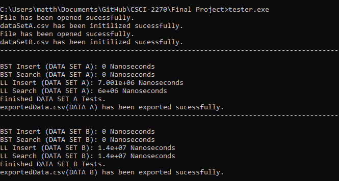

Save the USPS!  My final project in CSCI 2270, also known as Data Structures. A C++ program that measures the time for 5 different types of data sorting methods: linear hash, chain hash, quadratic hash, BST, and a linked list. Data Structures C++ Excel Grade Calculator A two part program. The GUI, when numbers are entered into the empty boxes and save is clicked, saves these numbers into a text file in a certain format (that mimicks the format of the GUI.) This format is able to be read by the 'Calc.Py' program, and then it exports the values into the 'Complete.txt' text file. The 'CompleteSlim.txt' file takes unrealistic values (like a -20% on a test) and removes them. Python TKinter